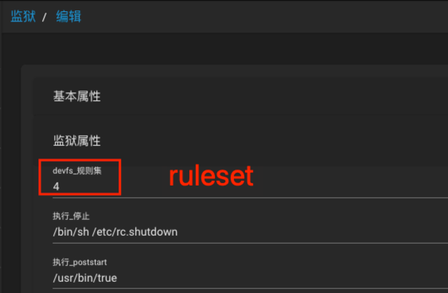

FreeNAS/FreeBSD Jail容器访问usb设备
一、背景
需要让jail实例访问adb，以完成一些手机操作，但其默认不允许访问USB设备。
二、基本知识
jail是freebsd系统在2000年推出的原生虚拟化技术，依赖于namespace机制（命名空间）。
2.1 devfs命令
devfs（device file system）用来管理全局(用户)命名空间对内核命名空间的访问权限。默认情况下，全局(用户)命名空间是无法对内核命名空间进行额外信息的访问，所以需要单独进行管理。
devfs的命令形式由条件（condition）+ 动作（action）组成，例子：
- 条件：当设备文件
/dev/ugen0.3被创建后 - 动作：
unhide该文件设备对命名空间可见，group 0其在命名空间内owner group被设置为0号用户组（即root组），mode 660并将其权限在命名空间内设置为660。
devfs rule -s 1003 add path /dev/ugen0.3 mode 660 group 0 unhide
2.1.1 ruleset规则集
每个jail实例对应一个namespace，所以每个namespace都可以被指定一个devfs的ruleset配置，以便说明该namespace允许访问哪些资源。例如：通过freenas创建/编辑时，可以指定使用哪个规则集成。 
查看1003规则集的详细规则：
> devfs rule -s 1003 show
100 include 5 # 包含5号规则集
200 path usb unhide # 容器可见/dev/usb设备（unhide表示不对命名空间隐藏，即可见）
300 path usbctl unhide mode 644 # 容器可见/dev/usbctl设备，且将其权限暴露为644
删除1003号规则集：
> devfs rule -s 1003 delset
创建1003号规则集：
# 规则集本身不需要显式创建，添加规则指定编号后时会自动创建
devfs rule -s 1003 add include 5 # 引入5号规则集到1003
devfs rule -s 1003 add path usb unhide # 设置/dev/usb设备文件对容器可见
devfs rule -s 1003 add path /dev/ugen0.3 mode 660 group 0 unhide # 设置/dev/ugen0.3对命名空间（jail容器）可见，其在命名空间内属于0号用户组（即root组），并将该设备文件权限在命名空间内设置为66。
devfs rule -s 1003 add path usb/0.2.0 mode 660 group 0 unhide # 同上条，usb/0.2.0是由`readlink /dev/ugen0.3`得到真实路径。
devfs rule -s 1003 add path usbctl mode 644 unhide # 设置/dev/usbctl设备文件对容器可见，且将其在容器内权限设置为644
2.2 iocage命令
在freebsd中使用iocage命令对jail进行管理（创建、启动、停止、配置等操作），使用方式可参考：
https://www.onitroad.com/jc/linux/how-to-create-freenas-jails-with-iocage.html
如图，可以freenas的管理界面为jail实例设置一个ruleset号，也可以直接使用命令管理。
获取jail实例所的devfs的规则集：
> iocage get devfs_ruleset {jail_name}
1003 # 表明使用的是1003号规则集
为jail实例设置devfs规则集：
为jail设置新的规则集后，需要重启实例才能生效。
iocage set devfs_ruleset=1003 {jail_name}
启动jail实例：
iocage start {jail_name}
停止jail实例：
iocage stop {jail_name}
三、让jail容器可访问usb设备
思路来源于国外博主：https://hauweele.net/~gawen/blog/?p=2532
1. 首先，使用该脚本，创建一个可访问usb设备的devfs规则集，编号为2000：
#!/bin/sh
# Custom ruleset for jails
export PATH="/bin:/sbin:/usr/bin:/usr/sbin:/usr/local/bin:/usr/local/sbin"
RULESET=2000 # 新规则集的编号，建议使用暂未被使用过的编号
GID_IN_INSTANCE=0 # 要将usb设备文件owner group，设置为容器内的哪个用户组ID。
PRINTER_NAME="Google Pixel 2" # 要允许访问的USB设备名称，通过usbconfig命令查看，取“尖括号内的名称”
# Find the printer device.
UGEN_DEV=$(usbconfig | grep "$PRINTER_NAME" | cut -d':' -f 1) # 根据USB设备名获得usb设备文件路径
USB_DEV=$(readlink /dev/$UGEN_DEV) # 同上
if [ -z "$UGEN_DEV" -o -z "$USB_DEV" ]
then
# 没获取到USB设备文件路径
echo "error: cannot find printer '$PRINTER_NAME'"
echo "error: please check with usbconfig"
exit 1
fi
echo "Found $PRINTER_NAME on $UGEN_DEV"
# Clean the ruleset
devfs rule -s $RULESET delset # 先删除已有的同规则集
# Include jails default ruleset and unhide USB device.
# 这解释见“ruleset规则集”小节中的解读。
devfs rule -s $RULESET add include 5 # 包含原来该jail实例所使用的规则集，获取方式见“ruleset规则集”中提到的命令。
devfs rule -s $RULESET add path usb unhide
devfs rule -s $RULESET add path $USB_DEV mode 660 group $GID_IN_INSTANCE unhide
devfs rule -s $RULESET add path $UGEN_DEV mode 660 group $GID_IN_INSTANCE unhide
devfs rule -s $RULESET add path usbctl mode 644 unhide
2. 为jail实例设置以上新的规则集成：
> iocage set devfs_ruleset=2000 {jail_name}
3. 重启jail实例，使其生效：
> iocage stop {jail_name}
> iocage start {jail_name}
四、参考资料
https://www.onitroad.com/jc/linux/how-to-create-freenas-jails-with-iocage.html